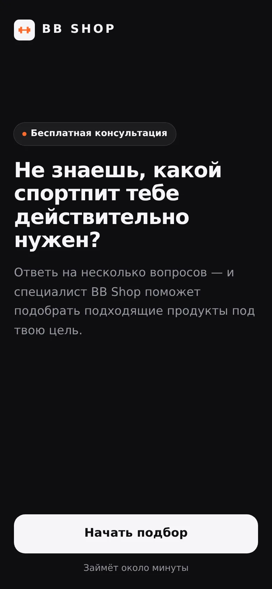
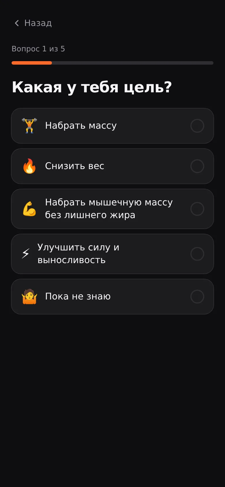
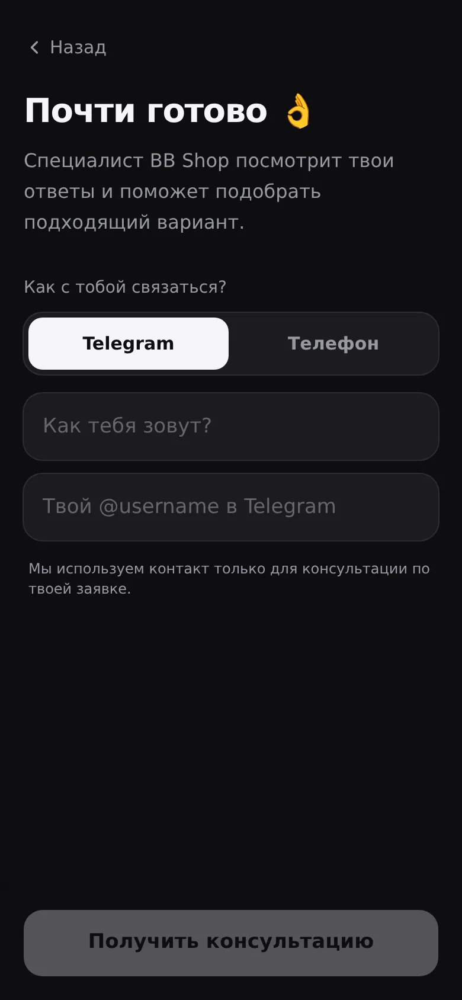
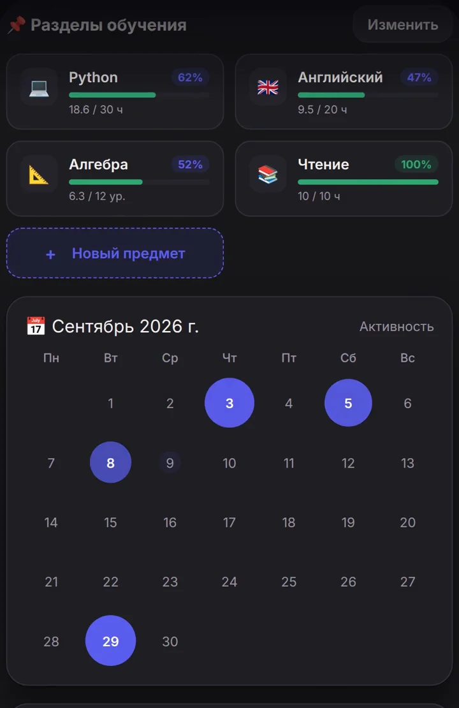

Before
- Клиент
- Пишет сообщение
- Ждёт ответа
- Менеджер уточняет детали вручную
- Вручную заносит данные
- Заказ / запись
Digital solutions for business
Находим, что в вашем бизнесе делается вручную, и превращаем это в рабочую систему: Telegram Mini App, бот, сайт или автоматизация — от идеи до запуска.
Для бизнеса, где заявки, записи, заказы или рутинные процессы всё ещё обрабатываются вручную.
Problem
Клиент написал → сообщение потерялось → клиент ушёл
Администратор вручную уточняет дату, время и услугу
Информация собирается по частям в переписке
Сотрудники каждый день повторяют одни и те же действия
Мы превращаем такие процессы в цифровые системы.
Before → After
Services
WEB
Лендинги, сайты компаний, каталоги и клиентские интерфейсы.
TELEGRAM
Заказы, записи, каталоги, личные кабинеты и другие сервисы прямо внутри Telegram.
AUTOMATION
Соединяем Telegram, сайты, CRM, таблицы и другие сервисы.
AI
Подключаем AI-помощников и обработку запросов к процессам, где это действительно помогает.
Selected work
Главный кейс · автоматизация заявок
Клиентский интерфейс для взаимодействия с магазином спортивного питания прямо внутри Telegram.



Главная ценность магазина — живая консультация специалиста. Но покупателю трудно самому выбрать спортпит, а разговор каждый раз приходится начинать с нуля: цель, тренировки, вес, что уже принимает.
Mini App внутри Telegram: анкета из 5 вопросов, контакт и автоматическая отправка заявки продавцу. Приложение ничего не продаёт — оно ведёт человека к консультации.
Готовую заявку прямо в Telegram: цель, режим тренировок, что клиент уже принимает, что хочет подобрать, вес и контакт.
🔥 НОВАЯ ЗАЯВКА BB SHOP 👤 Имя: Ильнур 🎯 Цель: Набрать массу 🏋️ Тренировки: 4–5 раз 💊 Сейчас принимает: Ничего из этого 🥛 Интересует: Протеин ⚖️ Вес: 78 кг 📱 Telegram: @username Время заявки: дата и время
Кейс · трекер в Telegram
Трекер учёбы и привычек прямо в Telegram.

How it works
Разбираем задачу.
Проектируем процесс.
Создаём решение.
Соединяем необходимые сервисы.
Запускаем.
Вам не нужно знать, какая технология нужна. Достаточно описать задачу своими словами.
Approach
Сначала разбираемся, что мешает бизнесу.
Затем ищем самый простой способ это исправить.
И только после этого выбираем технологии.
Не усложняем без необходимости.
Каждая функция должна решать задачу.
Создаём то, чем действительно будут пользоваться.
FAQ
Не нужно. Опишите задачу своими словами — техническую часть берём на себя.
Можно начать с одного конкретного процесса и расширять систему позже.
Можно автоматизировать существующий процесс, не переделывая всё с нуля.
Стоимость зависит от задачи и объёма. После короткого обсуждения можно определить подходящий формат.
Contact
Не знаете, что именно автоматизировать? Просто расскажите, как сейчас работает процесс. Вместе найдём, что можно упростить.
Обсудить задачуTelegram @yamulla